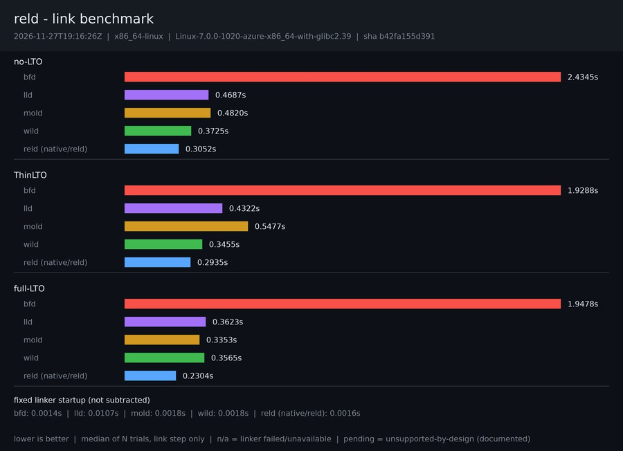

2026-11-27T19:16:26Z · x86_64-linux · Linux-7.0.0-1020-azure-x86_64-with-glibc2.39

| Configuration | bfd | lld | mold | wild | reld (native/reld) |
|---|---|---|---|---|---|
| no-LTO | 2.4345s | 0.4687s | 0.4820s | 0.3725s | 0.3052s |
| ThinLTO | 1.9288s | 0.4322s | 0.5477s | 0.3455s | 0.2935s |
| full-LTO | 1.9478s | 0.3623s | 0.3353s | 0.3565s | 0.2304s |
Reported raw and never subtracted from final-link medians.
| Series | Seconds |
|---|---|
| bfd | 0.0014s |
| lld | 0.0107s |
| mold | 0.0018s |
| wild | 0.0018s |
| reld (native/reld) | 0.0016s |